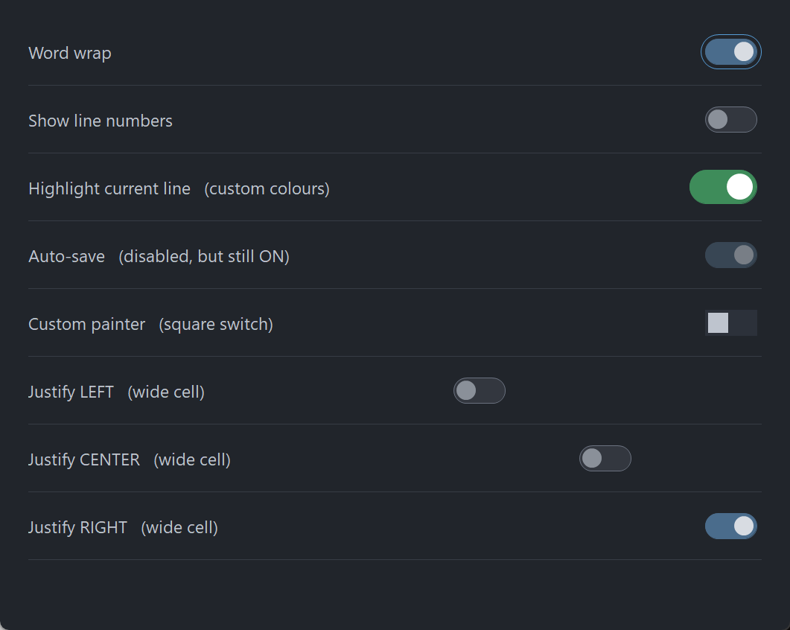

PsToggle
An owner-drawn toggle switch for FreeBASIC Win32 applications: a rounded pill whose fill changes with state, and a circular knob that sits at the left end when the switch is OFF and the right end when it is ON.
It is the control you reach for in a settings list, where a checkbox would work but a switch reads better. It takes focus, so it can be reached with Tab and operated with Space or Enter, and it draws itself entirely — there is no system control underneath, and nothing about its appearance depends on the visual style the user happens to be running. Every colour it paints is one you can set.
The control has no caption. It draws only the track and the knob, so a label goes beside it, positioned by you. There is no animation: the knob is at one end or the other.
What it looks like

Eight rows: ON with the focus ring, OFF, custom green colours, disabled-but-still-ON, a square switch from a host painter, and the three justifications inside a deliberately wide cell. The pill and knob are drawn through PsBufferPaint's GDI+ primitives, which is why the shoulders and the knob rim are smooth at this size.
Requirements
Files to copy into your project:
| File | Purpose |
|---|---|
PsToggle.bi | Declarations — types, callbacks, constants, function prototypes |
PsToggle.inc | Implementation |
PsBufferPaint.bi | The flicker-free drawing surface the control paints through |
PsBufferPaint.inc | Its implementation |
AfxNova is required. The control is built on CWindow, and PsBufferPaint draws through AfxNova\CGdiPlus.inc. Sources include AfxNova relative to the workspace root (#include once "AfxNova\CWindow.inc"), so builds need the workspace root on the include path:
fbc64.exe -i "C:\dev" main.basInclude order. PsToggle.inc pulls in its own .bi, which pulls in PsBufferPaint.bi. The two implementation files are included in this order:
#include once "PsBufferPaint.inc"
#include once "PsToggle.inc"GDI+ must be running before the first repaint and must outlive the last one. The control renders all of its geometry through GDI+, so bracket your message loop:
dim as ULONG_PTR gdipToken = AfxGdipInit()
' ... create windows, run the message loop ...
AfxGdipShutdown( gdipToken )AfxGdipShutdown must come after every window is destroyed, because each repaint builds and tears down a PsBufferPaint.
Never name an identifier ok. GDI+ defines Ok = 0 as a Status enum value in namespace AfxNova, and hosts customarily say using AfxNova. An existing variable, parameter or function called ok becomes a duplicate definition the moment you adopt these files. Use bOK instead.
For Tab navigation, call IsDialogMessage in your message pump. The control is a tabstop, but only the dialog manager moves focus between tabstops:
do while GetMessage( @uMsg, null, 0, 0 )
if uMsg.message = WM_QUIT then exit do
if IsDialogMessage( hWndForm, @uMsg ) = 0 then
TranslateMessage @uMsg
DispatchMessage @uMsg
end if
loopWithout it you still get full mouse behaviour, and Space and Enter still work once the control has focus — only Tab navigation is lost. There is no other pump obligation: the control needs no message filter of its own.
Give something the focus at startup. IsDialogMessage acts only when the focused window is already a descendant of the window you pass it. A real dialog does this in WM_INITDIALOG; an ordinary window must call SetFocus on its first control itself. Skip it and the first Tab does nothing, which is indistinguishable from the tabstops being broken.
Quick start
' Create it. The control is created zero-sized and hidden.
dim as HWND hToggle = PsToggle_Create( hWndParent, IDC_MYFORM_TOGGLE )
' Be told when the user flips it.
PsToggle_SetCheckChangedCallback( hToggle, @MyToggle_CheckChanged )
' Set the initial state. This is silent — the callback above does not fire.
PsToggle_SetChecked( hToggle, true )
' Ask how big it wants to be, then place it. GetIdealSize is valid immediately,
' before the control has ever been sized.
dim as long iw, ih
PsToggle_GetIdealSize( hToggle, iw, ih )
SetWindowPos( hToggle, 0, x, y, iw, ih, SWP_NOZORDER )
ShowWindow( hToggle, SW_SHOW )And the callback:
sub MyToggle_CheckChanged( byval hToggle as HWND, byval isChecked as boolean )
' Fired only for user action: a completed click, or Space/Enter.
' The control's state is already updated, so PsToggle_GetChecked() = isChecked.
gConfig.WordWrap = isChecked
end subThat is the whole minimum. Everything below is refinement.
Concepts
The handle is a real HWND
PsToggle_Create returns an ordinary window handle, and every PsToggle_* function takes it. It is not an opaque type, so you can treat the control as the window it is — SetWindowPos to place and size it, ShowWindow to show it, GetDlgItem to find it by the CtrlID you passed at creation.
It is created zero-sized and hidden
PsToggle_Create gives the control the styles WS_CHILD, WS_TABSTOP, WS_CLIPSIBLINGS and WS_CLIPCHILDREN, and no extended style at all. WS_VISIBLE is deliberately absent, so a newly created control shows nothing until you size it and call ShowWindow. That lets you build and configure a control before it is ever seen.
Geometry is derived, never assigned
The control computes three rectangles and owns all three. You influence them through the layout setters; you never write them.
| Rect | What it is |
|---|---|
rcTrack | The pill |
rcKnob | The circle, already at whichever end the current state calls for |
rcVisual | rcTrack grown on all four sides by the focus-ring band |
The formulas, if you need to predict them:
ringPad = focusGap + focusThickness
knobDia = trackHeight - 2*knobInset (floored at 1)
rcTrack.top = clientTop + (clientH - trackHeight) \ 2 ALWAYS v-centred
rcTrack.left = LEFT -> clientLeft + ringPad
CENTER -> clientLeft + (clientW - trackWidth) \ 2
RIGHT -> clientRight - ringPad - trackWidth
rcKnob.top = rcTrack.top + knobInset (w = h = knobDia)
rcKnob.left = OFF -> rcTrack.left + knobInset
ON -> rcTrack.right - knobInset - knobDia
rcVisual = rcTrack inflated by ringPad on all four sidesLayout is lazy. A setter marks the layout stale and asks for a repaint; the next paint — or any rect query — recomputes it. There is no begin-update / end-update pair to remember, and setting six properties in a row costs one layout pass, not six.
The knob's diameter follows the track height and the inset, never the width. Widening the track lengthens the pill and leaves the knob the same size.
The pill has an intrinsic size
It does not stretch to fill the control. Give the control a client area larger than the pill needs and the pill is placed inside it — horizontally by the justification setting, and always vertically centred.
The focus-ring band is always reserved
The ring is drawn inside a band of focusGap + focusThickness pixels around the track, and that band is reserved whether or not the control currently has focus. This is why the pill does not jump sideways when you Tab onto it — and it is why changing either focus-ring value changes the control's ideal size.
PsToggle_GetIdealSize returns those full visual bounds, ring band included. Size the control with it and the ring is never clipped.
Pixels, and who scales them
Only the creation-time defaults are DPI-scaled for you:
| Setting | Default | DPI-scaled at create? |
|---|---|---|
| Track width | 40 | Yes |
| Track height | 20 | Yes |
| Knob inset | 2 | Yes |
| Focus-ring gap | 3 | Yes |
| Border thickness | 1 | No |
| Focus-ring thickness | 1 | No |
Every setter afterwards takes raw pixels and expects you to scale — typically pWindow->ScaleX(...) / ScaleY(...). The two thickness values should not be scaled at all: a hairline should stay a hairline at any DPI.
Programmatic changes are silent
PsToggle_SetChecked never fires the change callback. The callback reports user action — a completed click, or Space/Enter — and nothing else. This follows Win32's own BM_SETCHECK / BN_CLICKED split, and it means you can safely call PsToggle_SetChecked from inside your own change handler without recursing.
How a click is decided
Pressing the left button focuses the control, then takes mouse capture. The state flips on release, and only if the press started on the control and the cursor is still over it. So the standard escape gesture works: press, slide off, release — nothing happens.
While a press is live and the cursor has slid outside, the control stops painting as pressed but the gesture is not over. Slide back on and it re-arms.
Space and Enter take exactly the same path as a completed click, so the keyboard and the mouse cannot drift apart: both are user action, both notify.
Keyboard handling is narrow on purpose
The control answers WM_GETDLGCODE with DLGC_WANTALLKEYS only for Space and Enter, and only when the dialog manager is asking about one specific message. Claiming keys unconditionally would swallow Tab and break the very navigation the control opted into by being a tabstop; claiming nothing would let IsDialogMessage route Enter to your dialog's default button before the control ever saw it.
Enabling and disabling is real, not cosmetic
PsToggle_SetEnabled calls EnableWindow. A disabled window receives no mouse input at all and the dialog manager's Tab skips it, so there is no way for a click or a keystroke to get past a cosmetic check. If you call EnableWindow on the control directly, the control notices and greys itself, so the two routes cannot disagree.
Disabling does not change the checked state. A disabled ON switch still reads as ON, which is why the colour struct carries separate disabled colours for each state.
Lifetime
The control frees itself when its window is destroyed. It owns no host resources: no font, no tooltip window, nothing to release. Destroy the parent and you are done.
Behaviour and limits
Firm properties of the control, not settings:
- No caption and no font. There is no
SetFont/GetFont. Nothing about this control's geometry is measured, so it never takes a device context. Put your label beside it. - No tooltip support. There is no tooltip callback and no tooltip window is created. If you want a tip, add your own tool over the control's
HWND. - No animation. The knob is at one end or the other; it does not slide.
- No tri-state. Checked or unchecked.
- No hit-test function. The entire client rectangle is the hit area, so a hit test could only ever return TRUE for points the caller already knows are inside.
- Double-clicks are not special.
CS_DBLCLKSis deliberately off, so a rapid second click arrives as an ordinary down/up pair and flips the switch again. That is what you want from a control whose job is to flip once per click — withCS_DBLCLKSon, every second rapid click would arrive asWM_LBUTTONDBLCLKand be dropped. - Arrow keys are not handled. Only Space and Enter activate the control. Left/right as off/on is a common switch idiom, but claiming the arrows would take them away from the dialog manager's navigation.
- The right mouse button is reported, never acted on. A context menu is your business. No capture is taken for the right button, so a right-up can arrive without a matching down.
- Invalid justification values are ignored, leaving the current setting in place, rather than laying the pill out somewhere unexpected.
- When the control is too small for the pill, justification degrades to LEFT and the pill clips at the edge. Rects are computed honestly rather than squeezed, so the pill keeps its proper shape and only the part past the edge is lost. The same applies vertically: a client shorter than the track clips top and bottom rather than deforming the pill.
API reference
Creation
| Function | Description |
|---|---|
PsToggle_Create( hWndParent, CtrlID ) as HWND | Creates the control as a child of hWndParent and returns its window handle. CtrlID becomes the window's GWLP_ID, so GetDlgItem finds it. Created zero-sized and hidden — size it with PsToggle_GetIdealSize, place it with SetWindowPos, then ShowWindow. |
State
| Function | Description |
|---|---|
PsToggle_GetChecked( hToggle ) as boolean | TRUE when the switch is ON (knob at the right end). |
PsToggle_SetChecked( hToggle, isChecked ) | Sets the state and repaints. Silent — does not fire the change callback. No-op when the state already matches. |
PsToggle_GetEnabled( hToggle ) as boolean | The control's enabled state. |
PsToggle_SetEnabled( hToggle, isEnabled ) | Enables or disables through EnableWindow, so input really stops. Disabling clears any hover and cancels a live press immediately rather than waiting for the next mouse move. Does not change the checked state. |
PsToggle_GetFocused( hToggle ) as boolean | TRUE while the control has keyboard focus and is painting its focus ring. |
PsToggle_Refresh( hToggle ) | Marks the layout stale and requests a repaint with background erase. Rarely needed — every setter does this for you. |
Layout
All setters take raw pixels; you do the DPI scaling. Each marks the layout stale and requests a repaint.
| Function | Description |
|---|---|
PsToggle_GetTrackSize( hToggle, byref nTrackWidth, byref nTrackHeight ) | The pill's current size in pixels. |
PsToggle_SetTrackSize( hToggle, nTrackWidth, nTrackHeight ) | Sets the pill's size. Each dimension is clamped to a minimum of 1. Changing the height also changes the knob's diameter. |
PsToggle_GetKnobInset( hToggle ) as long | The gap between the track edge and the knob, on all four sides. |
PsToggle_SetKnobInset( hToggle, nKnobInset ) | Sets that gap; clamped to a minimum of 0. An inset larger than half the track height yields a knob of diameter 1 rather than an invalid shape. |
PsToggle_GetBorderThickness( hToggle ) as long | The track's border thickness. |
PsToggle_SetBorderThickness( hToggle, nThickness ) | Sets it; clamped to a minimum of 0, where 0 means no border at all. Repaints but never re-lays-out — the border is drawn inside the track, so it moves nothing. Do not DPI-scale this value. |
PsToggle_GetFocusRing( hToggle, byref nGap, byref nThickness ) | The gap from the track to the focus ring, and the ring's own thickness. |
PsToggle_SetFocusRing( hToggle, nGap, nThickness ) | Sets both; each clamped to a minimum of 0. Both change the ideal size, because the ring's band is reserved whether or not the control has focus. Do not DPI-scale the thickness. |
PsToggle_GetJustify( hToggle ) as long | The current horizontal placement: TOG_JUSTIFY_LEFT, TOG_JUSTIFY_CENTER (the default) or TOG_JUSTIFY_RIGHT. |
PsToggle_SetJustify( hToggle, nJustify ) | Places the pill horizontally when the control is wider than the pill needs. Values outside the three constants are ignored. The pill is always vertically centred; there is no vertical justification. |
PsToggle_GetIdealSize( hToggle, byref nWidth, byref nHeight ) | The full visual bounds — (trackW + 2×ringPad) × (trackH + 2×ringPad), where ringPad = focusGap + focusThickness. Computed from the scalars rather than from the layout, so it is valid before the control has ever been sized. |
PsToggle_GetTrackRect( hToggle, byref rc ) as boolean | The pill's rectangle in client coordinates. |
PsToggle_GetKnobRect( hToggle, byref rc ) as boolean | The knob's rectangle, already positioned for the current state. |
PsToggle_GetVisualRect( hToggle, byref rc ) as boolean | The track inflated by the focus-ring band. |
The three rect queries force any pending layout first, so their results are always current. Each returns FALSE — leaving rc empty — when the control has no client area yet, which is the case between PsToggle_Create and the first SetWindowPos.
Appearance
| Function | Description |
|---|---|
PsToggle_GetColors( hToggle, pColors as PSTOGGLE_COLORS ptr ) | Fills your struct with the control's current colours. |
PsToggle_SetColors( hToggle, pColors as PSTOGGLE_COLORS ptr ) | Copies the whole struct in and repaints with background erase. |
To change one colour, read-modify-write:
dim as PSTOGGLE_COLORS clrs
PsToggle_GetColors( hToggle, @clrs )
clrs.TrackColorOn = BGR( 62,140, 90)
clrs.TrackBorderColorOn = BGR( 62,140, 90)
PsToggle_SetColors( hToggle, @clrs )Callback registration
| Function | Description |
|---|---|
PsToggle_SetPaintCallback( hToggle, usersub ) | Installs a renderer that draws the whole control instead of the built-in painter. Repaints. |
PsToggle_SetMessageCallback( hToggle, userfunc ) | Installs an observer for mouse, focus and key messages. |
PsToggle_SetCheckChangedCallback( hToggle, usersub ) | Installs the handler told when the user flips the switch. |
All three are optional and independent.
Colors
The colour surface is one flat struct, PSTOGGLE_COLORS, with twenty COLORREF fields: three drawn parts (track fill, track border, knob) × two states (ON / OFF) × three moods (idle, hot, disabled), plus the control's own background and the focus ring. Every field ships with a usable dark-theme default, so a control you never call PsToggle_SetColors on still looks right.
| Field | Paints |
|---|---|
BackColor | The control's own client area, behind the pill |
FocusRingColor | The focus ring, drawn only while the control has focus |
TrackColorOn | Pill fill, ON, idle |
TrackColorOnHot | Pill fill, ON, mouse over or pressed |
TrackColorOnDisabled | Pill fill, ON, disabled |
TrackBorderColorOn | Pill border, ON, idle |
TrackBorderColorOnHot | Pill border, ON, mouse over or pressed |
TrackBorderColorOnDisabled | Pill border, ON, disabled |
KnobColorOn | Knob, ON, idle |
KnobColorOnHot | Knob, ON, mouse over or pressed |
KnobColorOnDisabled | Knob, ON, disabled |
TrackColorOff | Pill fill, OFF, idle |
TrackColorOffHot | Pill fill, OFF, mouse over or pressed |
TrackColorOffDisabled | Pill fill, OFF, disabled |
TrackBorderColorOff | Pill border, OFF, idle |
TrackBorderColorOffHot | Pill border, OFF, mouse over or pressed |
TrackBorderColorOffDisabled | Pill border, OFF, disabled |
KnobColorOff | Knob, OFF, idle |
KnobColorOffHot | Knob, OFF, mouse over or pressed |
KnobColorOffDisabled | Knob, OFF, disabled |
Which colour wins
The built-in painter picks one fill, one border and one knob colour per repaint, in this precedence:
disabled > hot or pressed > idlewithin whichever of the two state groups (ON or OFF) currently applies.
There are no pressed colours. A live press renders as hot, which reads correctly for a control that flips on release. The pressed flag is still handed to a paint callback, so a custom renderer can draw a distinct pressed look if it wants one.
Disabled colours are per-state on purpose: a disabled ON switch must still read as ON.
Why the ON pill looks borderless by default
TrackBorderColorOn* defaults to exactly the matching TrackColorOn*, so the ON pill reads as a solid shape with no outline. The OFF pill is distinguished the other way: its fill sits close to the background and its border is markedly lighter, so it reads as an outline. That asymmetry is the intended look. If you want a visible ON border, set the field to something different from the fill.
What the painter draws
| Part | Shape |
|---|---|
| Track | A rounded rectangle whose corner ellipse is as wide and tall as the rect's own height. That, and only that, is what makes both ends exact semicircles and turns a rounded rectangle into a pill. Drawn with a border when the border thickness is above 0, filled without one at 0. |
| Knob | A filled ellipse, no rim. |
| Focus ring | A rounded outline over rcVisual, drawn only while the control has focus and the ring thickness is above 0. Never a fill — it is drawn over the pill, and a filled shape there would erase it. |
All of it goes through PsBufferPaint, which renders geometry with GDI+, so the pill's shoulders and the knob's rim are antialiased. A paint callback gets that same buffer and inherits the same antialiased primitives.
Callbacks
Check changed
type TOG_CheckChangedCallbackSub as sub( byval hToggle as HWND, byval isChecked as boolean )The user flipped the switch — a completed click, or Space/Enter. Fires after the control's state is updated, so PsToggle_GetChecked( hToggle ) already equals isChecked.
It does not fire for PsToggle_SetChecked, which is what makes it safe to call that setter from inside this handler.
Paint
type TOG_PaintCallbackSub as sub( byval p as PSTOGGLE_PAINTINFO ptr )Draws the whole control instead of the built-in painter. Paint through p->b, the control's double buffer for this repaint — do not touch the screen DC.
The control has already filled the client with BackColor before calling you, so a callback that only wants to add something on top does not have to repaint the background.
PSTOGGLE_PAINTINFO carries everything you need:
| Field | Meaning |
|---|---|
hToggle | The control, so the callback can query it |
b | The control's PsBufferPaint for this repaint (borrowed, not owned) |
rcClient | The whole client area |
rcTrack | The pill |
rcKnob | The circle, already at the end the current state calls for |
rcVisual | rcTrack inflated by the focus-ring padding |
isChecked | ON when TRUE |
isHot | The mouse is over the control |
isPressed | A live left press and the cursor is still inside |
isEnabled | The control's enabled state |
isFocused | Draw a focus ring when TRUE |
All three rects are precomputed. Use them as given — in particular, do not re-derive the knob from the track by repeating the inset arithmetic, because the inset can change underneath you.
isPressed goes FALSE when the cursor slides off during a press, without the gesture ending. That is deliberate: the press should stop looking armed the moment the cursor leaves.
A paint callback that fills a rectangle covering the whole control will erase everything under it. Draw your additions, not a background — the control has already painted one.
Message
type TOG_MessageCallbackFunc as function( byval m as PSTOGGLE_MESSAGEINFO ptr ) as booleanObserves messages as they arrive. Return TRUE to suppress the control's own handling of that message, FALSE to let it proceed.
PSTOGGLE_MESSAGEINFO carries hToggle, uMsg, wParam and lParam.
Mouse messages, focus changes (WM_SETFOCUS, WM_KILLFOCUS) and WM_KEYDOWN are all reported here.
Your return value is ignored for three messages:
| Message | Why |
|---|---|
WM_LBUTTONUP | The control holds mouse capture across a press, and the up-message is what releases it. A callback that suppressed it would strand the capture and route every later click to this control. Suppressing WM_LBUTTONDOWN suppresses the press itself, which is allowed — no capture has been taken at that point. |
WM_SETFOCUS | Focus is a fact the system reports, not an action to veto. The state is already updated by the time you are called. A host that does not want the control focusable must not make it a tabstop. |
WM_KILLFOCUS | As above. |
For every other message, TRUE suppresses the default handling.
Constants
enum
TOG_JUSTIFY_LEFT = 0
TOG_JUSTIFY_CENTER ' the default
TOG_JUSTIFY_RIGHT
end enum| Constant | Value | Meaning |
|---|---|---|
PSTOGGLE_DEFAULT_TRACKW | 40 | Default track width, DPI-scaled at create |
PSTOGGLE_DEFAULT_TRACKH | 20 | Default track height, DPI-scaled at create |
PSTOGGLE_DEFAULT_KNOBINSET | 2 | Default knob inset, DPI-scaled at create |
PSTOGGLE_DEFAULT_BORDERTHICK | 1 | Default border thickness, never DPI-scaled |
PSTOGGLE_DEFAULT_FOCUSGAP | 3 | Default focus-ring gap, DPI-scaled at create |
PSTOGGLE_DEFAULT_FOCUSTHICK | 1 | Default focus-ring thickness, never DPI-scaled |